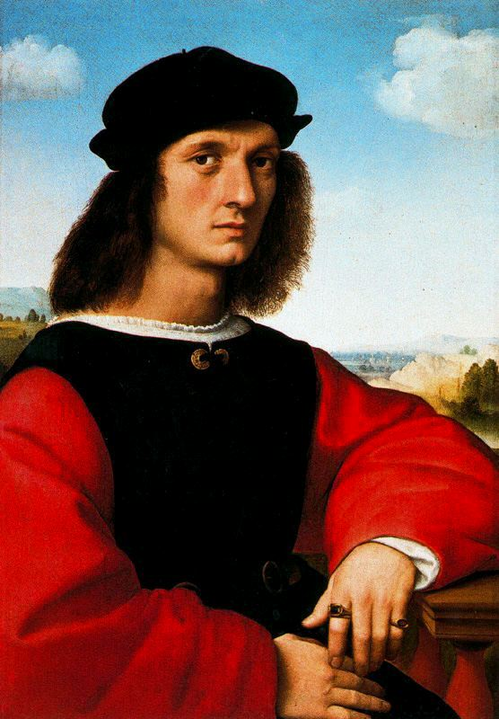
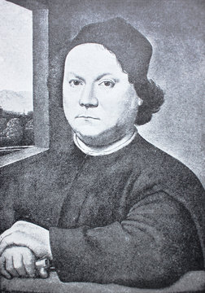

Biografías de Artistas Italianos
1. Leonardo da Vinci (1452-1519)
Leonardo da Vinci, nacido en Vinci, Italia, fue un polímata renacentista cuyo genio abarcó diversas áreas del conocimiento y la creatividad.
Como pintor, es conocido por obras maestras como "La Última Cena" y "La Mona Lisa", donde demostró una habilidad sin igual para capturar la vida y la emoción en sus retratos.
Además de su destreza artística, da Vinci realizó importantes descubrimientos científicos y desarrolló diseños de máquinas adelantados a su tiempo, lo que lo convierte en uno de los más grandes genios de la historia.

2. Michelangelo Buonarroti (1475-1564)
Michelangelo, nacido en Caprese, Italia, fue un escultor, pintor y arquitecto cuya obra marcó el Renacimiento italiano.
Su legado incluye la escultura "David", una obra maestra de proporción y belleza, así como los frescos de la Capilla Sixtina, donde demostró su habilidad para crear composiciones monumentales y emotivas.
Michelangelo también dejó una huella indeleble en la arquitectura, con obras como la Basílica de San Pedro en el Vaticano.

3. Rafael Sanzio (1483-1520)
Rafael, nacido en Urbino, Italia, fue uno de los principales exponentes del Alto Renacimiento. Su obra se caracteriza por su gracia, armonía y perfección técnica,
como se ve en obras como "La Escuela de Atenas" y "La Madonna Sixtina". Rafael fue un maestro en la representación de la figura humana y su trabajo influyó en generaciones
posteriores de artistas con su idealización clásica y su sentido del equilibrio.

4. Caravaggio (1571-1610)
Caravaggio, cuyo nombre real era Michelangelo Merisi da Caravaggio, fue un pintor barroco italiano conocido por su estilo naturalista
y su uso dramático de la luz y la sombra. Sus obras, como "El Entierro de Cristo" y "Judit decapitando a Holofernes", rompieron con las convenciones artísticas de la época
y lo convirtieron en una figura influyente en la historia del arte.
5. Gian Lorenzo Bernini (1598-1680)
Artemisia Gentileschi fue una destacada pintora barroca italiana, conocida por su estilo realista y su representación poderosa de figuras femeninas.
A pesar de las dificultades que enfrentó como mujer en el mundo del arte, Artemisia dejó un legado duradero con obras como "Judith decapitando a Holofernes", que muestran su habilidad para representar el drama
y la emoción con intensidad.
6. Artemisia Gentileschi (1593-1656)
Artemisia Gentileschi fue una destacada pintora barroca italiana, conocida por su estilo realista y su representación poderosa de figuras femeninas.
A pesar de las dificultades que enfrentó como mujer en el mundo del arte, Artemisia dejó un legado duradero con obras como "Judith decapitando a Holofernes",
que muestran su habilidad para representar el drama y la emoción con intensidad.

7. Titian (c. 1488-1576)
Tiziano, también conocido como Tiziano o Titian, fue uno de los más grandes pintores del Renacimiento veneciano.
Su habilidad para capturar la belleza y la profundidad emocional se refleja en obras como "Venus de Urbino" y "Bacanal de los Andrios",
que muestran su dominio del color y la composición.
8. Donatello (c. 1386-1466)
Donatello fue un escultor del Renacimiento italiano conocido por su innovación y habilidad técnica. Obras como "David" y "San Jorge"
en Florencia son ejemplos destacados de su capacidad para representar el realismo en la escultura y su influencia en el desarrollo del arte renacentista.

9. Sandro Botticelli (c. 1445-1510)
Sandro Botticelli fue un pintor del Renacimiento temprano, famoso por sus obras de belleza serena y elegante. Su obra maestra,
"El nacimiento de Venus", es un icono del arte renacentista y representa la gracia y la armonía clásica.
10. Verrocchio (c. 1435-1488)
Andrea del Verrocchio fue un destacado escultor, pintor y orfebre del Renacimiento italiano. Además de ser el maestro de Leonardo da
Vinci, Verrocchio creó obras influyentes como "David con la cabeza de Goliat" y "El Bautismo de Cristo", destacando por su habilidad técnica y su sentido del detalle.
